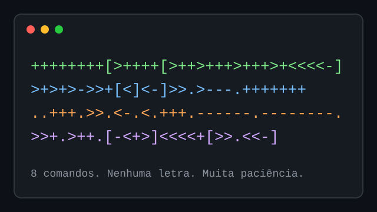
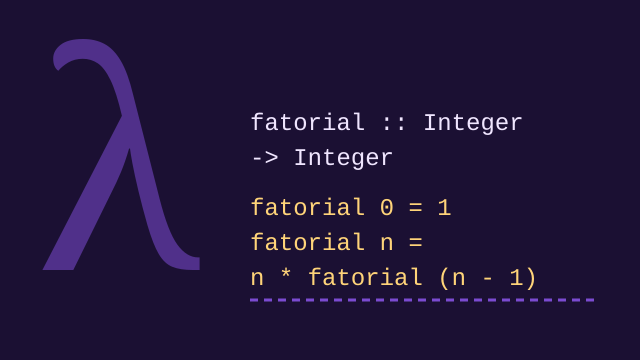
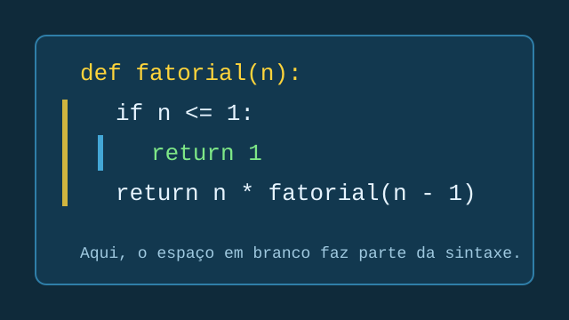

O jogo do Adivinhe a Linguagem: veja o código, escolha a linguagem e suba no ranking.
Como funciona
O PolyglotQuiz mostra um trecho de código misterioso e quatro opções de
linguagem. Pode ser algo simples, como calcular um fatorial ou inverter uma string, ou algo
bizarro, como um programa em Brainfuck. Quanto mais rápido você acertar, mais pontos ganha.
Leia o código com atenção.
Escolha uma das quatro linguagens.
Ganhe pontos por acertos rápidos e desbloqueie conquistas.
Veja seu nome no ranking.
Desafio da rodada
Qual é a linguagem deste código? Ele calcula o fatorial de um número.
fatorial :: Integer -> Integer
fatorial 0 = 1
fatorial n = n * fatorial (n - 1)
Ranking e conquistas
Ranking de exemplo.
Top 5 jogadores (dados de exemplo)
Posição
Jogador
Pontos
Acertos
Última partida
1º
Ada
980
10 de 10
2º
Linus
870
9 de 10
3º
Grace
760
8 de 10
4º
Dennis
640
7 de 10
5º
Margaret
510
6 de 10
Conquistas
Primeiro passo: acertou o primeiro código.
Relâmpago: acertou em menos de 5 segundos.
Funcional: acertou um código em Haskell.
Mente aberta: acertou um código em Brainfuck.
Curiosidades
Por que cada linguagem tem aquela sintaxe? Veja três histórias.
Brainfuck: poucos comandos, muita paciência

Um programa em Brainfuck é só uma sequência de símbolos.
Criada em por Urban Müller, a linguagem tem só
8 comandos. A ideia era fazer o menor compilador possível. O resultado é
uma sintaxe que parece ruído, mas que é completa do ponto de vista computacional.
Haskell: funções puras e casamento de padrões

O fatorial em Haskell é quase uma definição matemática.
Haskell nasceu na academia, inspirada no cálculo lambda. Por isso o
fatorial se escreve como na matemática: um caso para o zero e outro para os demais
números. A assinatura de tipos vem antes e descreve o que a função recebe e devolve.
Python: a indentação é a sintaxe

Em Python, o recuo define os blocos de código.
Guido van Rossum quis um código que fosse fácil de ler. Em vez de chaves, Python
usa o recuo para marcar onde cada bloco começa e termina. Assim, o código bem formatado é
também o código correto.
Contato
Tem uma sugestão de código misterioso para o quiz? Mande para a gente.